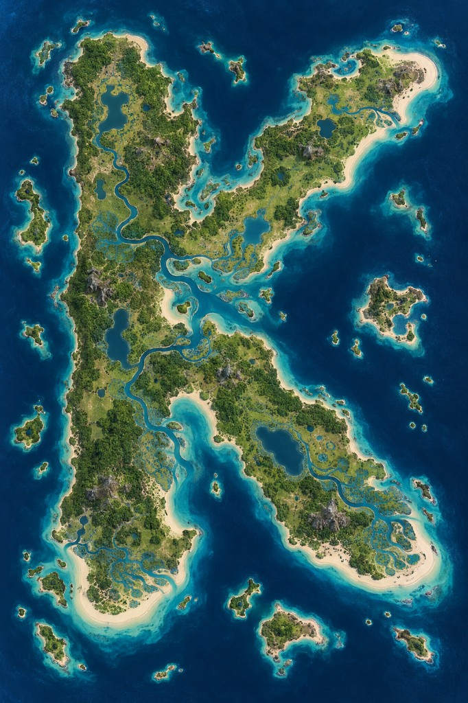

A K-shaped tropical island with river cuts, flanking islets, and a name that started as a joke on a chart.

Vernon found it. The same Vernon the snow map is named after — a famous pirate who would rather name a coast than share it. His sailing master inked the outline and swore the land spelled a letter. Vernon laughed, then kept the name because a letter is easy to shout across a deck when the fog comes down. Port Vernon sits on the upright stroke. The two arms are still argued over: which is north, which is south, and who first ran a boat between them.
Hold the upright bar and you can see both arms. The gaps between the strokes are navy roads. Islets off the arms are good for a sneak port. Inland water is a cut, not a wall — batteries on one arm can still reach a fool who parks on the other.
See also: Vernon · Crackamack Isles · play Marauder's Sea free